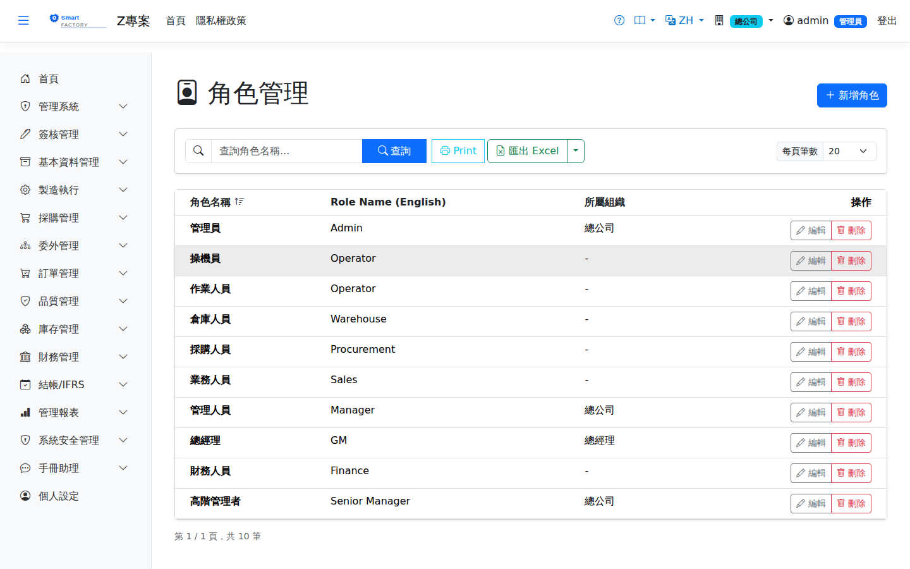

角色管理Role Management
角色是本系統A role is 權限的唯一載體the one and only carrier of permissions：使用者能看到哪些選單、能不能新增或刪除，全部由他被指派的角色決定。角色本身在這個畫面建立與維護，至於每個角色實際能做什麼，則在 in this system: which menus a user sees, and whether they may create or delete, is decided entirely by the roles assigned to them. Roles themselves are created and maintained on this screen, while what each role may actually do is set on the 功能權限設定Permission Settings畫面設定。 screen.

欄位說明Field reference
| 欄位名稱Field | 必填Required | 說明Guide |
|---|---|---|
| 角色名稱Role name | 必填Required | 全系統唯一。簽核模板的「指定角色」步驟、以及權限設定的清單都以此名稱顯示。Unique across the system. It is the name shown on approval template steps that target a role, and in the permission settings list. |
| 英文名稱Name (EN) | 介面切換為英文時顯示的名稱。留空時英文介面仍顯示中文名稱。The name shown when the interface is in English. Left empty, the Chinese name is shown in the English interface too. | |
| 組織單位Organization unit | 這個角色隸屬的部門。它不只是分類資訊——The department this role belongs to. It is not merely descriptive: 主管簽核靠它往上找人supervisor approval uses it to find the person above（見下方說明）。 (see below). | |
| 可用廠別Plants allowed | 勾選這個角色能進入哪些廠。Tick the plants this role may enter. 完全不勾＝不限制廠別Ticking none means no restriction，可切換到系統中任何一廠。, and the user may switch to any plant in the system. | |
| 預設廠別Default plant | 使用者切換到這個角色時自動進入的廠。有勾可用廠別但沒指定預設時，取清單中的第一個。The plant a user lands in when they switch to this role. When plants are ticked but no default is chosen, the first one in the list is used. |
組織單位與主管簽核Organization unit and supervisor approval
簽核模板的步驟可以指定簽核人為「主管」。系統解析主管的方式是：A step in an approval template can name the approver as "supervisor". This is how the system works out who that is:
廠別指派Plant assignment
使用者登入後在「個人設定」切換角色時，系統會一併處理廠別：When a user switches role under "Personal settings" after signing in, the system handles the plant at the same time:
| 角色的廠別設定The role's plant setting | 切換到這個角色時When switching to this role |
|---|---|
| 有勾選可用廠別Plants are ticked | 自動切到預設廠（沒設預設就取第一個），且The user is moved to the default plant (or the first one if no default is set), and 只能在勾選的廠之間切換may only switch among the ticked plants。. |
| 完全沒勾No plant is ticked | 保留使用者目前所在的廠，且可切換到任何一廠。The user stays in the plant they are in and may switch to any plant. |
操作步驟Steps
新增角色Adding a role
刪除角色Deleting a role
下列任一情況會擋下刪除，並在訊息中列出原因：Any of the following blocks the deletion, and the message lists the reason:
| 擋下的原因Reason it is blocked | 處理方式What to do |
|---|---|
| 還有使用者（會顯示人數）Users still have it (the count is shown) | 先到「使用者管理」把這些人的該角色取消勾選。Untick this role for those people under "User Management" first. |
| 被簽核模板步驟指定An approval template step targets it | 到「簽核模板設定」把該步驟改指定其他角色或刪除該步驟。Change that step to another role, or delete it, under "Approval Template Settings". |
| 有進行中的簽核流程由此角色送出An approval flow submitted under this role is still running | 等流程簽完或撤回後再刪。Wait for it to finish or be withdrawn. |
匯出Export
查詢結果可匯出 Excel（.xlsx）、CSV 或 JSON，內容為角色名稱、英文名稱與所屬組織單位。The results can be exported as Excel (.xlsx), CSV or JSON, containing the role name, its English name and its organization unit.